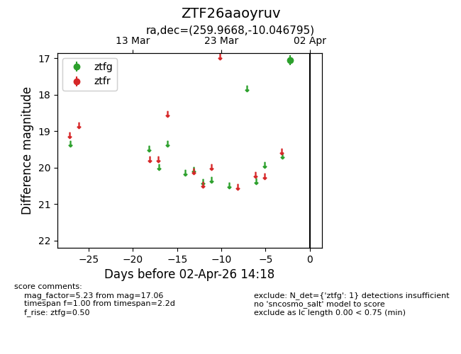
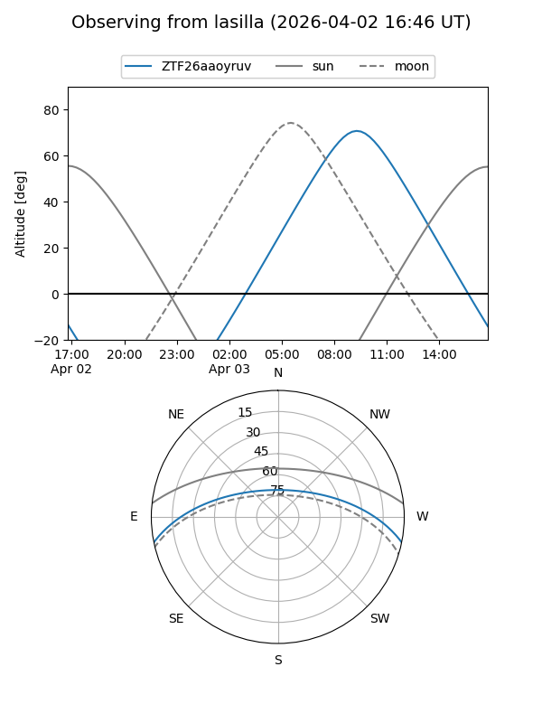
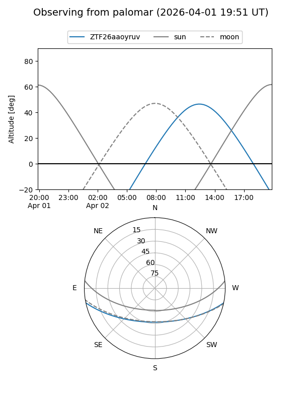

ZTF26aaoyruv
Target ZTF26aaoyruv at 2026-04-02 14:24
Aliases and brokers:
FINK: link
Lasair: link
ALeRCE: link
alt names
ZTF26aaoyruv (ztf,fink_ztf)
Coordinates:
equatorial (ra, dec) = 259.9668,-10.04680
equatorial (HMS+DMS) = 17:19:52.03,-10:02:48.46
galactic (l, b) = (12.9453,+15.15047)
Flags:
Photometry:
last ztfg=17.06
1 ztfg detections
Lightcurve

Visibility


Additional plots